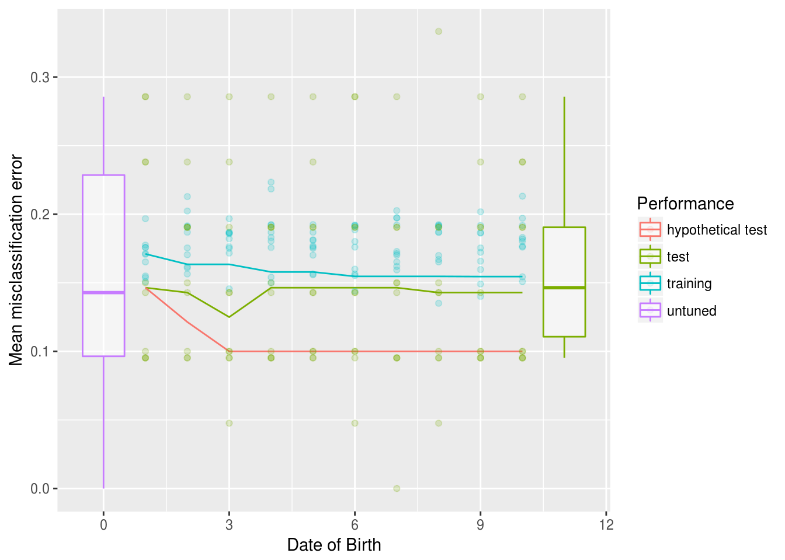
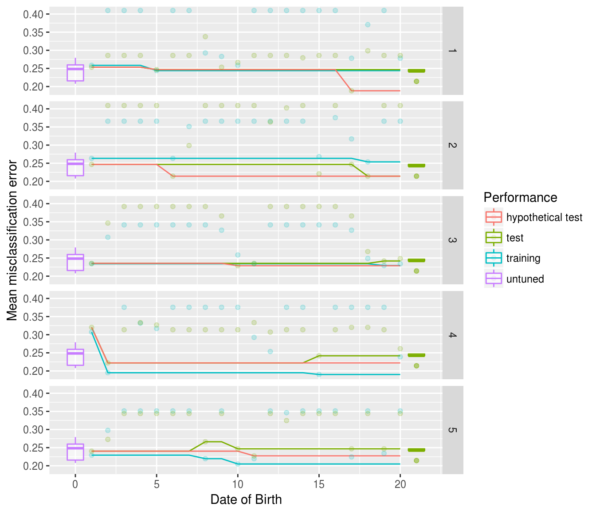

library(mlrOverfit)
par.set = makeParamSet(
makeIntegerParam(id = "mtry", upper = 4, lower = 1),
makeIntegerParam(id = "min.node.size", upper = 10, lower = 1)
)
oa = generateOverfitAnalysis(task = sonar.task, learner = "classif.ranger", par.set = par.set)
plot(oa)
library(mlrOverfit)
task = pid.task
learner = makeLearner("classif.ksvm")
par.set = makeParamSet(
makeNumericParam(id = "C", upper = 10, lower = -5, trafo = function(x) 2^x),
makeNumericParam(id = "sigma", upper = 15, lower = -15, trafo = function(x) 2^x)
)
tune.control = makeTuneControlRandom(maxit = 20)
learner.tuned = makeTuneWrapper(learner = learner, resampling = hout, par.set = par.set, control = tune.control)
ro = resampleOverfit(learner = learner.tuned, task = task, resampling = cv10)
outer.errors = calcOuterPerformances(ro)
outer.errors = simulateOuterPerformance(outer.errors)
plot(outer.errors, ro)